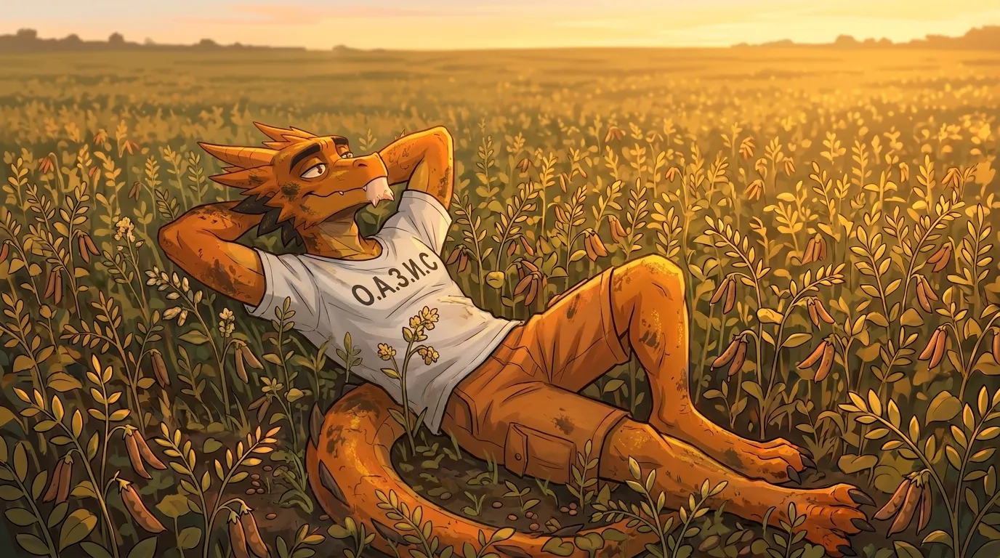
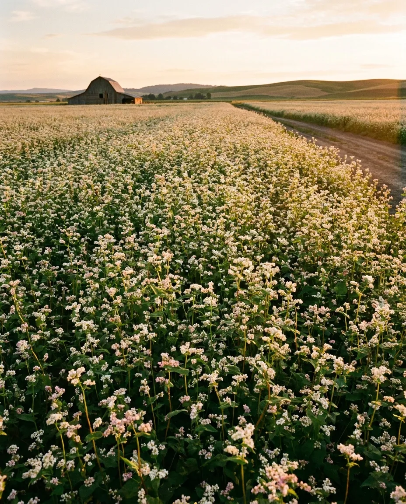
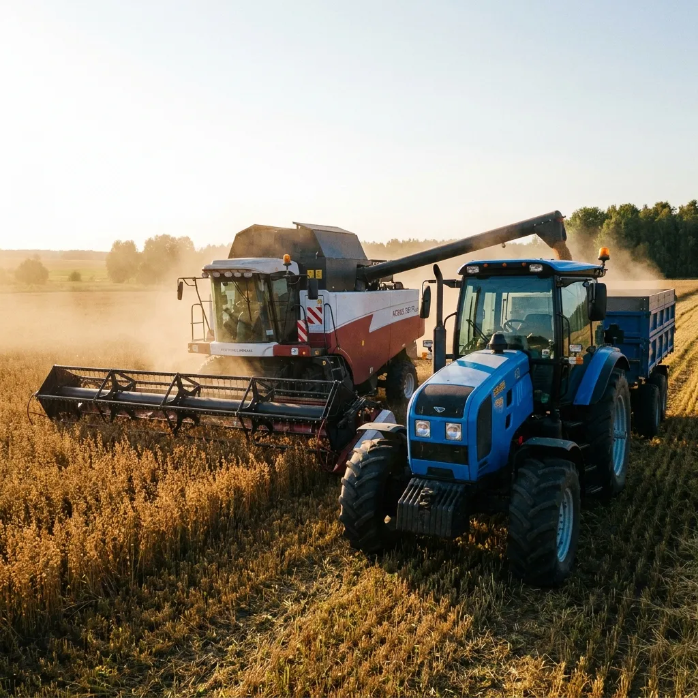

ГРЕЧИХА
Гречиха — ценная крупяная и медоносная культура, которая используется для производства крупы, муки и других пищевых продуктов. Её значение определяется качеством зерна, выходом ядрицы, пищевой ценностью и способностью успешно выращиваться в разных почвенно-климатических условиях.
Селекционная программа направлена на создание высокоурожайных, скороспелых и дружносозревающих сортов, устойчивых к полеганию, осыпанию и неблагоприятным факторам среды. Отдельное внимание уделяется крупности и технологическим качествам зерна, адаптивности растений, устойчивости к болезням, а также нектаропродуктивности культуры.

Направления селекции
- Высокая нектаропродуктивность и медоносные качества
- Скороспелость
- Устойчивость к полеганию и осыпанию зерна
- Засухоустойчивость и жаростойкость
- Устойчивость к болезням и вредителям
- Холодостойкость и устойчивость всходов к весенним заморозкам
